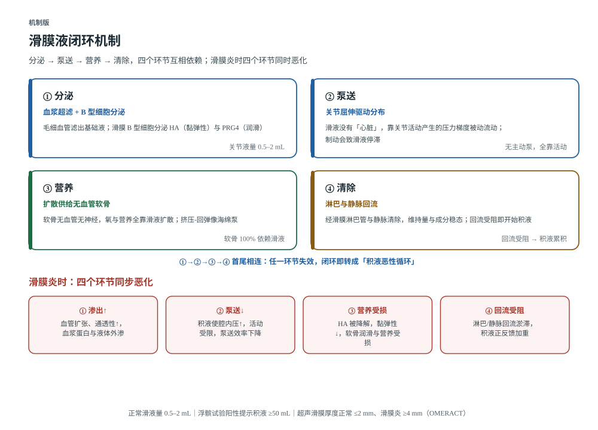
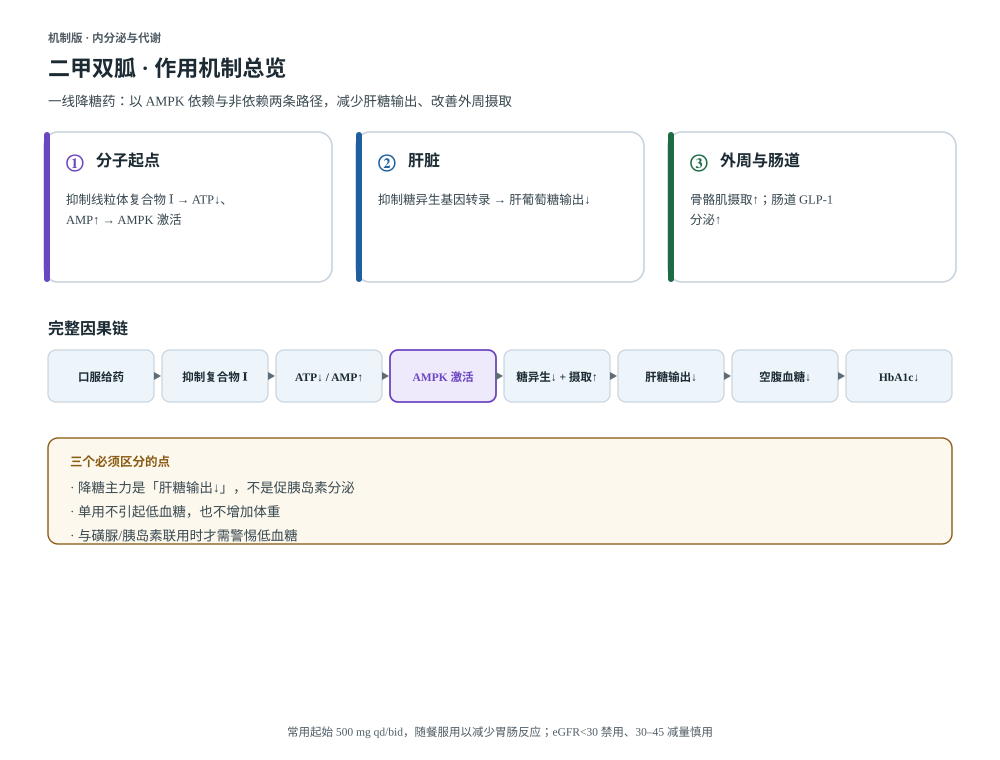
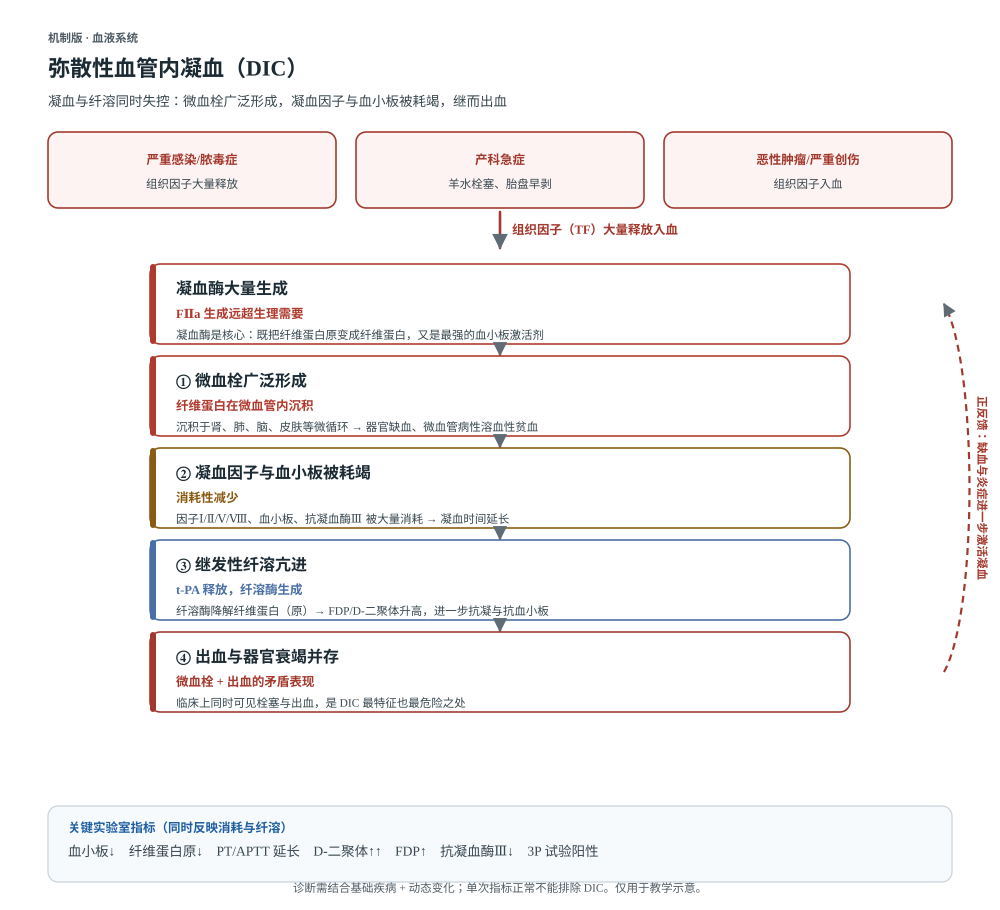
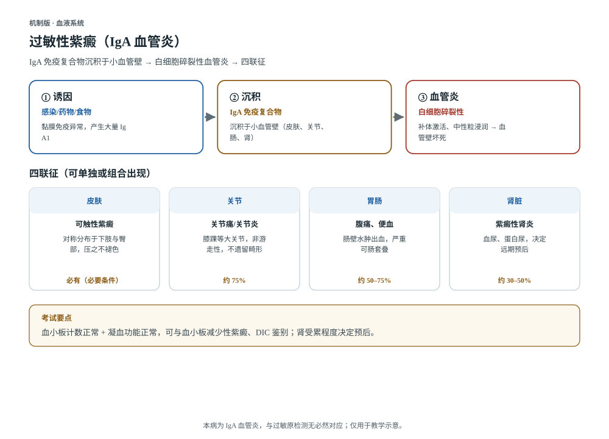

点「机制版」等按钮查看可缩放原图 运动系统机制解剖动态 膝关节滑膜液循环 滑膜液分泌—泵送—营养—清除闭环；滑膜炎时四环节同步恶化，形成积液正反馈。 机制版 ↗解剖版 ↗动态版 ↗ 更新 2026-11-02 18:11 · 元素 9 个
点「机制版」等按钮查看可缩放原图 运动系统机制解剖动态 肌丝滑行机制 横纹肌收缩的分子基础：细肌丝向 M 线滑入，A 带恒定、I 带与 H 区缩短，肌丝自身长度不变。 机制版 ↗解剖版 ↗动态版 ↗钙开关 ↗耦联 ↗横桥循环 ↗ 更新 2026-11-02 18:11 · 元素 10 个
点「机制版」等按钮查看可缩放原图 内分泌与代谢机制 二甲双胍作用机制 一线降糖药：抑制线粒体复合物Ⅰ → ATP↓/AMP↑ → AMPK 激活，减少肝糖输出、改善外周摄取、上调肠道 GLP-1。 机制版 ↗mech-ampk ↗mech-liver ↗mech-peripheral ↗ 更新 2026-11-02 18:29 · 元素 4 个
点「机制版」等按钮查看可缩放原图 血液机制动态 弥散性血管内凝血（DIC） 动态版：可交互查看机制演进 机制版 ↗动态版 ↗ 更新 2026-11-02 18:32 · 元素 2 个
点「机制版」等按钮查看可缩放原图 免疫机制动态 过敏性紫癜（IgA 血管炎） 动态版：可交互查看机制演进 机制版 ↗动态版 ↗ 更新 2026-11-02 18:32 · 元素 2 个